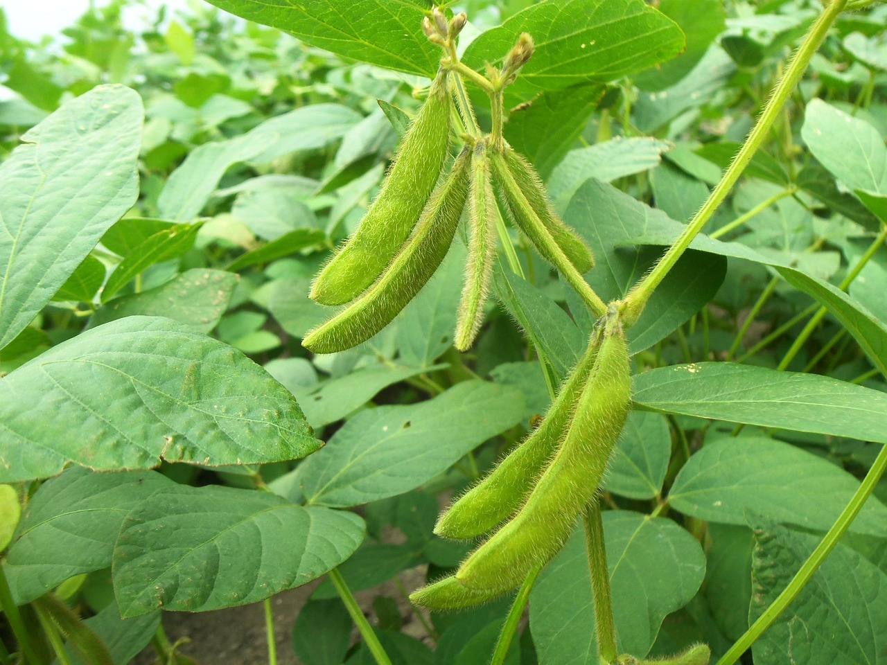
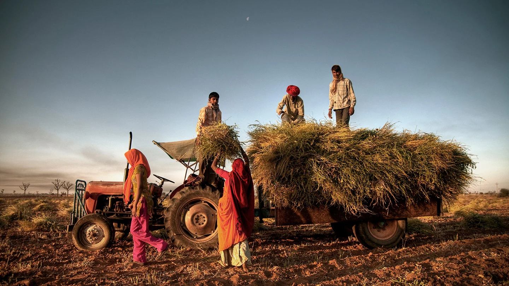
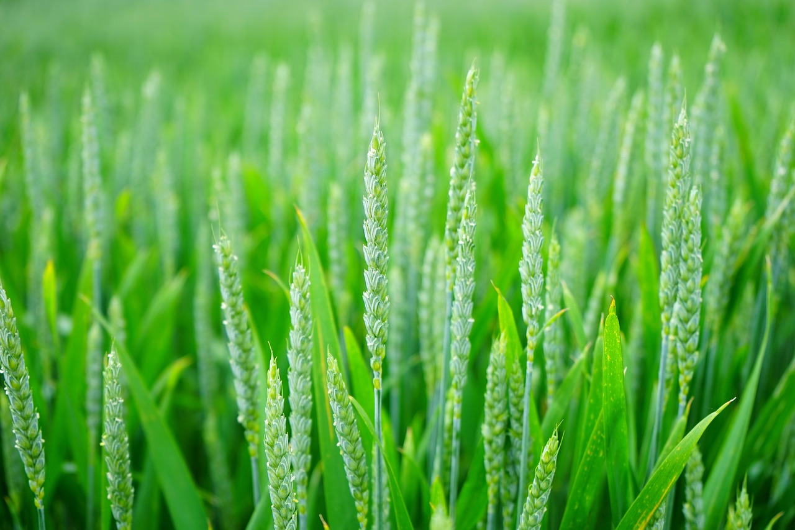
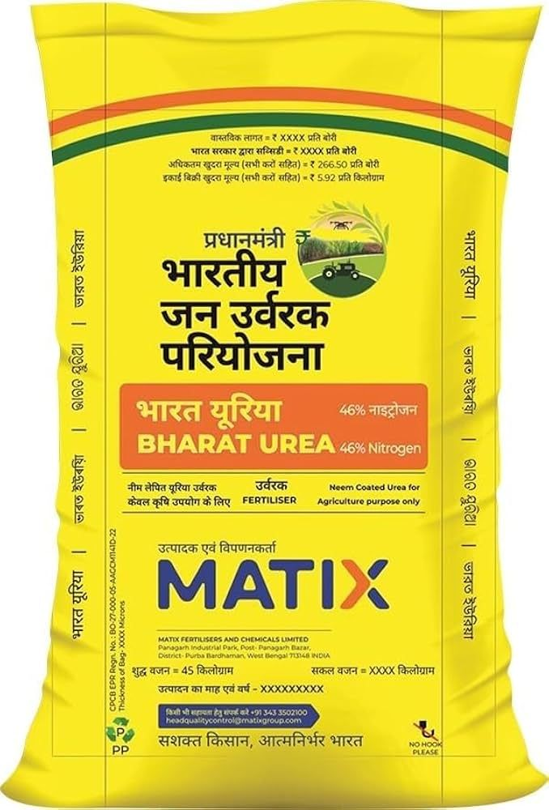
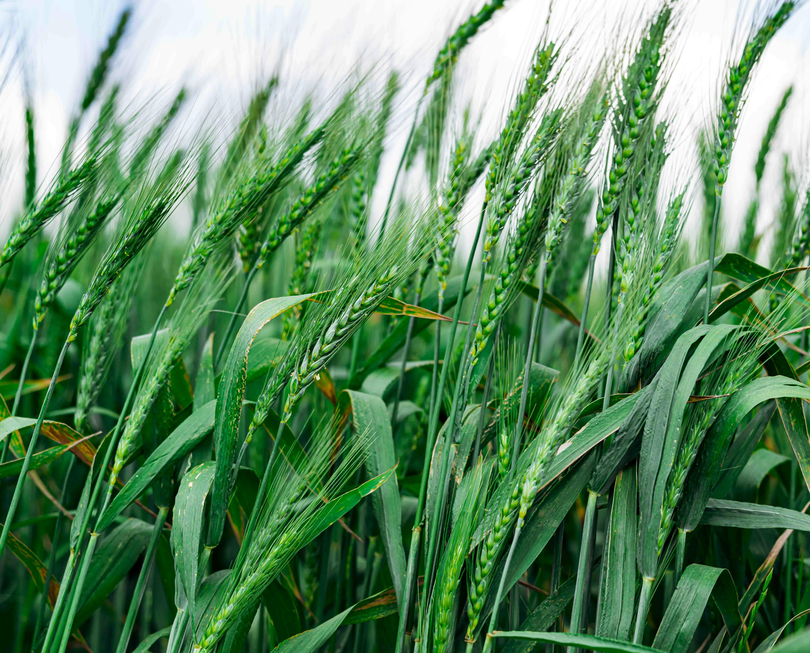
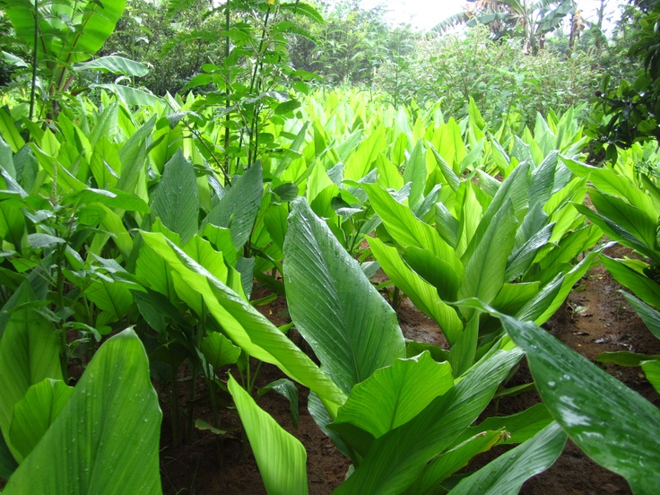
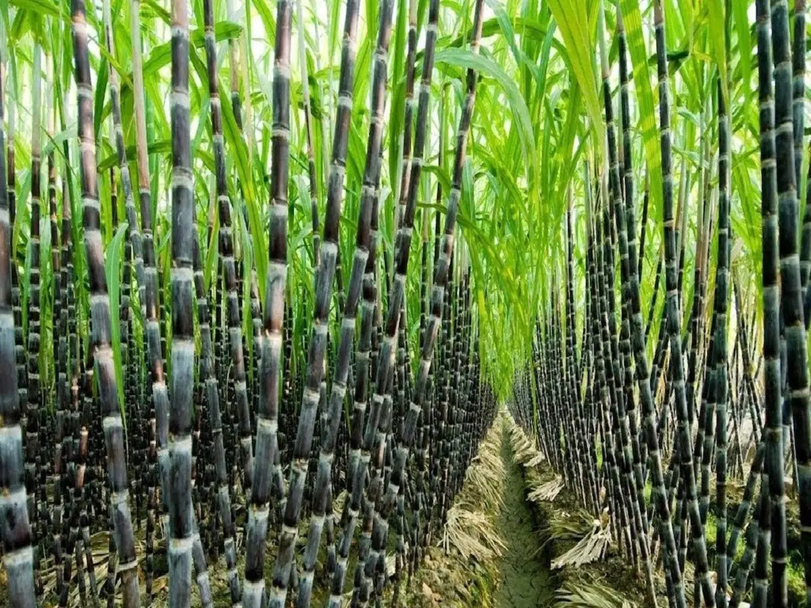

Oilseed
SMART AGRICULTURE • TRUSTED GUIDANCE
Empowering Farmers,
Empowering Farmers,
Growing Better Tomorrow
Explore practical crop knowledge, quality inputs and useful agricultural guidance designed for modern farming.

CROP INFORMATION
Healthy Crops Start With
Healthy Crops Start With
Better Decisions
Discover crop-wise cultivation practices, soil guidance and seasonal information in one place.
View Crops
QUALITY AGRICULTURAL INPUTS
Feed Your Soil,
Feed Your Soil,
Support Every Harvest
Learn about fertilizers and their role in balanced crop nutrition and healthy growth.
Explore Fertilizers
QUALITY SEEDS
Start Strong With
Start Strong With
Quality Seeds
Explore seed information to help farmers choose suitable options for productive farming.
Explore SeedsReliable GuidancePractical information for farmers
Crop to HarvestUseful support at every stage
Farmer FocusedBuilt around agricultural needs

🌾Smart Krushi Kendra
Supporting Farmers, Growing Agriculture
Smart Krushi Kendra Portal is a user-friendly digital platform created to support farmers with essential agricultural information. The portal focuses on helping farmers improve crop production and farming practices through easy access to crop advisory, market price details, and farming medicine information. Farmers can learn about different crops such as soybean, cotton, wheat, rice, and maize, including their cultivation methods, soil requirements, and common diseases. The portal also provides information about fertilizers, pesticides, and other farming medicines with proper usage guidance to promote healthy crop growth. Market price updates help farmers understand crop value and make better selling decisions. Smart Krushi Kendra Portal aims to encourage smart and sustainable farming by connecting farmers with reliable and practical agricultural knowledge through a simple and accessible digital platform.
GROW WITH CONFIDENCE
View All Crops
Explore Our Popular Crops
Practical crop information, cultivation guidance and farming insights for better decisions in every season.

Cereal
Spice Crop
Cash CropSugarcane
🌿A tall tropical crop used for sugar, juice and several useful by-products.
Explore detailsNeed complete crop guidance?Discover more crops, cultivation tips and useful agricultural information.
Explore Crop Library